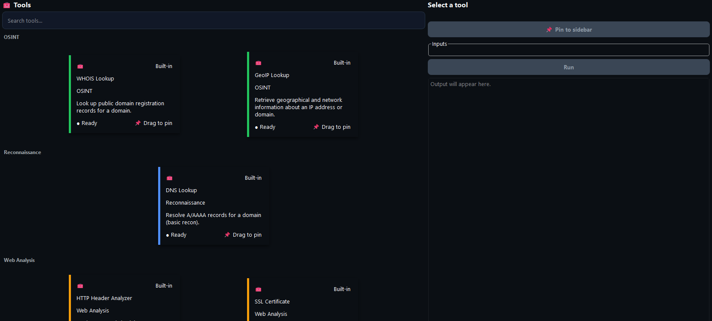
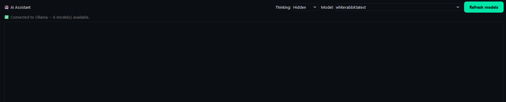

PlainPaper brings reconnaissance, OSINT, web analysis, and a local AI assistant into one desktop app — powered by Ollama, running entirely on your machine.
Windows may show a SmartScreen warning since the installer isn't code-signed yet — click More info → Run anyway.

Every tab you'd normally have open for an investigation, built into a single window.
Ask questions, get explanations, or let it run a lookup for you. It reads your tool results and keeps working with you — no API keys, no cloud calls, nothing leaves your machine.

WHOIS, DNS resolution, ping, and Nmap scans, run from the same place you're taking notes.
GeoIP, Shodan, and VirusTotal lookups, without fifteen browser tabs.
Fetch a URL, review its response headers and SSL certificate against common best practice.
Run commands without leaving the app, and keep blue-team tools one click from your notes.
The assistant is wired into the same tool registry you use manually — it knows what WHOIS, DNS, and header checks return, and can run them itself when you ask. Every model runs locally, so your targets, findings, and prompts never leave your computer.
Tools are organized and color-coded by category — recon, OSINT, web analysis, blue team — so you always know what you're reaching for. Pin the ones you use most to the sidebar and they open in their own dedicated page, ready to run.
PlainPaper doesn't ship its own model — it talks to Ollama, which runs the model on your machine.
Grab the installer for your OS from the official site and run it. This is what actually runs the AI model locally.
Get Ollama →Open a terminal and pull a model. llama3.1 is a solid general-purpose default — swap in any model Ollama supports.
ollama pull llama3.1
Open the AI Assistant tab and PlainPaper will detect Ollama and the models you've pulled automatically.
Jump to download ↓Version 1.0 · Windows 10/11 · Local-first